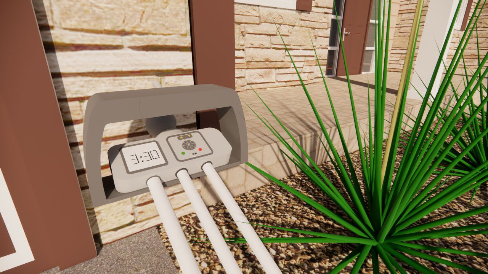
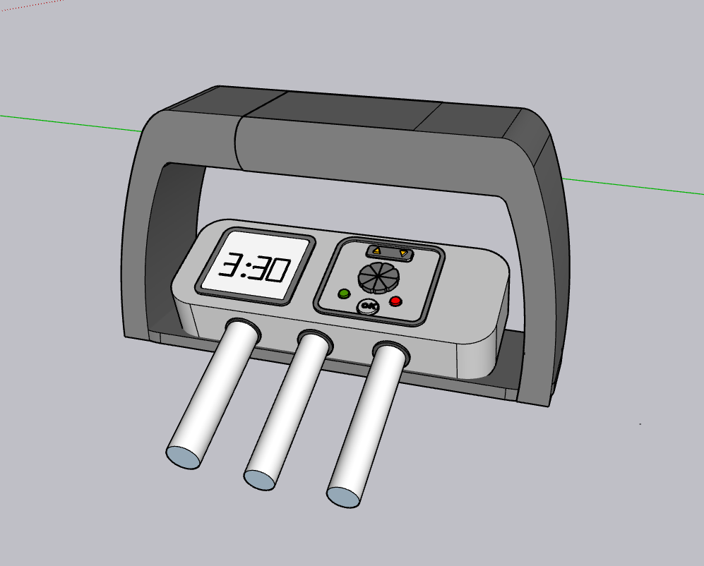
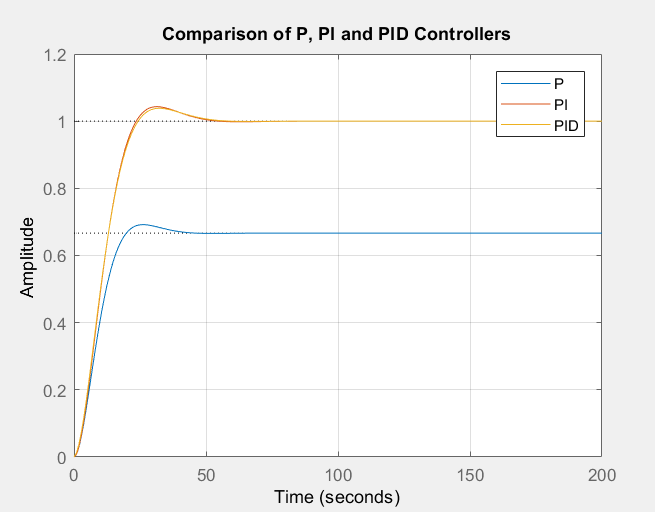
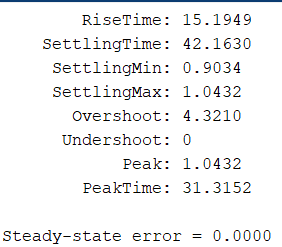
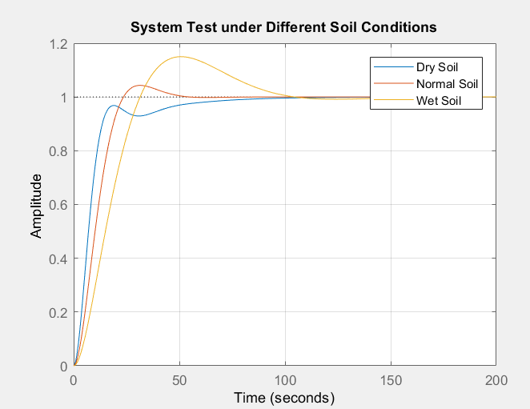

ترکیب کنترل هوشمند، طراحی صنعتی و رابط کاربری ساده برای آبیاری دقیق گیاهان
این سیستم یک راهکار هوشمند برای کنترل رطوبت خاک است که با استفاده از سنسور رطوبت، پمپ آب را بهصورت خودکار کنترل میکند. هدف اصلی، حفظ رطوبت مطلوب خاک بدون هدررفت آب و بدون نیاز به دخالت مداوم کاربر است.

دستگاه دارای بدنهای مقاوم با دستگیره حمل است و شامل سه لوله مجزا برای ورودی آب، خروجی آب و سنسور رطوبت میباشد. طراحی بهگونهای انجام شده که استفاده از آن در محیطهای خانگی و گلخانهای بسیار ساده باشد.
نمایشگر دیجیتال درصد رطوبت خاک را نمایش میدهد و کاربر میتواند رطوبت هدف را از طریق دکمه کنترلی تنظیم کند. چراغهای وضعیت، عملکرد پمپ را نشان میدهند.

مدل دینامیکی خاک بهصورت یک سیستم مرتبه اول در نظر گرفته شده و برای کنترل رطوبت، از کنترلکننده PID استفاده شده است. این کنترلکننده باعث کاهش نوسان، افزایش سرعت پاسخ و حذف خطای ماندگار میشود.

نتایج شبیهسازی نشان میدهد که سیستم دارای زمان نشست مناسب، فراجهش کم و خطای ماندگار تقریباً صفر است.

سیستم تحت شرایط خاک خشک، نرمال و مرطوب تست شده و در تمامی حالتها رفتار پایدار و قابل قبولی از خود نشان داده است.

این پروژه نمونهای از کاربرد کنترل خطی در یک سیستم واقعی است که با ترکیب شبیهسازی، طراحی صنعتی و تجربه کاربری مناسب، راهکاری عملی برای آبیاری هوشمند ارائه میدهد.
گیاه سالم، آبیاری هوشمند
برای مشاهده جزئیات بیشتر، QR Code را اسکن کنید